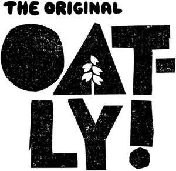

Trade Mark Journal No.2025/041 10 October 2025
WO0000001877689 (3,5,9,11,14,16,18,21,25,26,29,30,31,32,33,35,41,43,44)
Office of origin: European Union Intellectual Property Office (EUIPO)
Date of International Registration:17 April 2025
Date of designation in the UK:
17 April 2025

International priority date claimed: 22 October 2024
(European Union Intellectual Property Office (EUIPO))
(019094821)
International priority date claimed: 16 April 2025
(European Union Intellectual Property Office (EUIPO))
(019174339)
- Class 3
- Toiletries; body cleaning and beauty care preparations; cosmetics; perfumery and fragrances; skin, eye and nail care preparations; body cleaning and beauty care preparations containing oats; oat soaps; flavorings for beverages [essential oils]; essential oils and aromatic extracts; essential vegetable oils; flavour enhancers for food [essential oils]; food flavorings prepared from essential oils; oat oil for cosmetic purposes; bath and shower gels; bath and shower gels containing oats; beauty milk; beauty milk containing oats; body and facial butters and creams; body and facial butters and creams containing oats; body and facial milk; body and facial milk containing oats; cleaning masks for the face; cleaning masks for the face containing oats; grains for buffing; non-medicated skincare preparations; skin cleansing foams; exfoliating scrubs for the feet and hands; facial soaps; bath milk; bath milk containing oats; non-medicated bath preparations; non-medicated bath oils; after-sun milk; babies' creams [non-medicated]; baby body milks; beauty masks; milk for cosmetic purposes; milky lotions for skin care; hair removal and shaving preparations; temporary tattoos.
- Class 5
- Dietary and nutritional preparations; oat-based dietary and nutritional supplement preparations; dietary supplement drinks; oat-based dietary supplement drinks; dietary supplements in powder form; oat-based dietary supplements in powder form; dietetic beverages containing oats; fibre (dietary -); nutritional supplement energy bars; nutritional drink mix for use as a meal replacement; nutritional supplement food bars; nutritional supplement energy bars containing oats; nutritional drink mix containing oats for use as a meal replacement; nutritional supplement food bars containing oats; powdered nutritional supplement drink mix; powdered nutritional supplement drink mix containing oats; protein supplement shakes; protein supplement shakes containing oats; oat-based dietary supplement drink mixes [milk substitutes]; oat-based dietary supplemental drinks in the nature of vitamin and mineral beverages [milk substitutes].
- Class 9
- Software for online messaging and marketing; downloadable digital recipes and collections of recipes in electronic format; community software; downloadable software in the nature of a mobile application for food delivery and ordering; computer software for entertainment; computer software for use on handheld mobile digital electronic devices and other consumer electronics.
- Class 11
- Coffee machines; refillable coffee capsules; coffeepots, electric; espresso coffee machines; coffee percolators, electric; coffee capsules, empty, for electric coffee machines.
- Class 14
- Ornamental pins; decorative pins [jewellery]; bracelets; necklaces; earrings; charms [jewelry]; decorative articles [trinkets or jewellery] for personal use; friendship bracelets; brooches [jewellery]; lockets [jewelry]; necklace charms; metal badges for wear [precious metal]; pendants [jewelry]; plastic bracelets in the nature of jewelry; rings [jewellery]; charity wristbands [jewellery]; bracelets for watches; watches; metal watch bands; sports watches; charms for key rings; decorative key rings; key fobs.
- Class 16
- Posters; printed recipe cards; decorative stickers; recipe books; magazines; recipe books featuring oat-based food and beverages; magazines featuring oat-based food and beverages; pens; pencils; stationery; collectable cards; decorative stickers for cars; gift tags; note cards; note books; paper badges; paper signs; postcards; printed informational cards; printed menus; beer mats of paper; coasters made of paper; cocktail mats of paper; disposable napkins; flags of paper; paper napkins; place mats of paper.
- Class 18
- Tote bags; sports bags; backpacks; bumbags; canvas bags; canvas shopping bags; card wallets; casual bags; coin purses; grocery tote bags; make-up bags; toiletry bags.
- Class 21
- Tableware, cookware and containers; glasses, drinking vessels and barware; serving pots and jugs, coffee pots and tea pots; milk jugs; jugs for frothing milk; non-electric milk frothers; cups, saucers and mugs; bowls; insulated mugs; coffee mugs; ceramic mugs; beer mugs.
- Class 25
- Clothing; footwear; headwear; t-shirts; anoraks; turtleneck shirts; printed t-shirts; athletic clothing; jackets; outer clothing; bomber jackets; wind-resistant jackets; trench coats; denim jackets; quilted jackets; duffel coats; shirts; jumpers; jumper dresses; polo neck jumpers; trousers; chino pants; hats; bandanas; beanies; fashion hats; flat caps; sweatbands; headbands; sun hats; visors being headwear; athletic shoes; disposable slippers; trainers.
- Class 26
- Heat adhesive patches for decoration of textile articles [haberdashery]; sewing boxes, sewing kits, sewing needles; decorative articles for the hair; embroidery; embroidery for garments; ornamental cloth patches; embroidered patches; brooches [clothing accessories]; embroidered badges; charms, other than for jewellery, key rings or key chains.
- Class 29
- Dairy substitutes; dairy product substitutes; milk substitutes; milk substitutes containing oats; oat milk [milk substitute]; oat-based beverages and drinks for use as a milk substitute; milk substitute based beverages and drinks [milk substitute predominating]; almond milk, almond milk-based beverages; coconut milk, coconut milk-based beverages; fruit-flavored oat milk-based drinks; milk substitute-based drinks containing coffee; yoghurt substitutes; yoghurt substitutes containing oats; milk substitute preparations for making yoghurt; oat-based yoghurt substitute; oat-based yoghurt and drinking yoghurt free of milk and lactose; yoghurt and drinking yoghurt substitutes containing oats; fruit-flavored yoghurt substitutes; fruit-flavored yoghurt substitutes containing oats; sour milk substitutes; sour cream substitutes; sour milk substitutes containing oats; sour cream substitutes containing oats; cream substitutes; crème fraiche substitutes; cream substitutes containing oat; crème fraiche substitutes containing oats; non-dairy creamer; oat-based cooking cream and creamer; vegetable based cream; butter substitutes, margarine substitutes; oat-based butter substitutes; oat-based margarine substitutes; cheese substitutes; oat-based cheese; milk substitute powder, milk substitute powder for food and nutritional purposes; dried milk substitute powder, cream substitute powder; flavored milk substitute powder for making drinks; vegetable powders; coconut milk powder; vegetable spreads; processed fruit, fruit snacks; fruit chips; fruit-based snack foods; milkshakes; flavoured milkshakes; oat-based milkshakes; flavoured oat-based milkshakes; milkshakes made from milk substitutes; non-dairy milkshakes; milkshakes substitute.
- Class 30
- Processed grains, starches, and goods made thereof, baking preparations and yeasts; doughs, batters, and mixes therefor; food preparations based on grains; oat flour; malt-based food preparations; mixes for making bakery products; oat bars; flour of oats; cereal preparations containing oat bran; oat biscuits for human consumption; oat cakes for human consumption; flapjacks; oat flour based chips; oat flour based savory snacks; flour based snack foods; grain-based chips; grain-based snack foods; snack food products made from cereal flour; snack food products made from cereal starch; confectionery made from dairy substitutes; oat clusters containing dried fruit; waffles; malted bread mix; oat-based flatbreads; cookies; cereal bars; coffee-based beverage containing milk substitutes; coffee-based beverages containing ice cream substitutes (affogato); coffee concentrates; ground coffee; instant coffee; artificial coffee; ground coffee beans; coffee based beverages; coffee capsules, filled; preparations for making beverages [coffee based]; filters in the form of paper bags filled with coffee; dairy-free chocolate; oat pasta; oat porridge; ready-to-eat cereals; cake mixes; bread mixes; non-dairy frozen yoghurt; oat-based ice cream substitute; high-protein cereal bars; ice cream drinks; flavoured ice cream drinks; oat-based ice cream drinks; flavoured oat-based ice cream drinks; ice cream drinks made from milk substitutes; non-dairy ice cream drinks; ice cream drink substitute; ice cream; flavoured ice-cream; oat-based ice cream; oat-based flavoured ice-cream; ice cream made from milk substitutes; non-dairy ice cream; ice cream substitute; milk substitutes frozen yoghurt; oat-based custard; oat-based vanilla custard; oat-based vanilla sauce.
- Class 31
- Oats; unprocessed oats; raw oats; fresh oats; malt; unprocessed cereals; grains [cereals]; raw and unprocessed grains.
- Class 32
- Preparations for making beverages; non-alcoholic beverages; oat-based beverages; waters; coconut water; flavored waters; fruit flavoured waters; powders used in the preparation of coconut water drinks; malt wort; carbonated non-alcoholic drinks; dry ginger ale; ginger beer; ginger ale; aloe juice beverages; coconut-based beverages; beverages consisting of a blend of fruit and vegetable juices; non-alcoholic fruit drinks; smoothies containing grains and oats; concentrates for use in the preparation of soft drinks; extracts for making non-alcoholic beverages; extracts of unfermented must; malt syrup for beverages; starch-based dry mixes for beverage preparation; syrups for making whey-based beverages; syrups for making beverages; beer and non-alcoholic beer; beer and non-alcoholic beer containing oats; beer wort; beer-based beverages; sports drinks; oat-based sports drinks; protein-enriched sports beverages containing oats; sports drinks containing electrolytes; concentrates for use in the preparation of sports drinks; energy drinks.
- Class 33
- Alcoholic cocktails containing oat-based dairy substitutes; liqueurs containing oat-based dairy substitutes; none of the aforesaid goods being wine or wine-based beverages.
- Class 35
- Retail services and online retail services in relation to dietary supplement drinks, nutritional supplement food, nutritional drink mixes and protein shakes; retail services and online retail services in relation to pins [jewellery], bracelets, necklaces, earrings, charms [jewelry] and decorative articles [trinkets or jewellery], watches and key rings; retail services and online retail services in relation to stickers, posters, recipe books, magazines, temporary tattoos, stationery, note cards, coasters, napkins and place mats; retail services and online retail services in relation to tote bags, sports bags, canvas bags, wallets and toiletry bags; retail services and online retail services in relation to accessories for apparel, embroidered patches and badges; retail services and online retail services in relation to unprocessed oats; retail services and online retail services in relation to oat-based food and beverage products including milk substitutes, yoghurt substitutes, sour cream substitutes, cream substitutes, crème fraiche substitutes, cheese substitutes, butter substitutes and milkshakes; retail services and online retail services in relation to oat-based food and beverage products including bars, snack foods, cereals, coffee-based beverages, ice cream, frozen yoghurt, ice cream drinks and custard; retail services and online retail services in relation to oat-based beverages, coconut-based beverages, beer, non-alcoholic beer, sports drinks, protein-enriched sports drinks and energy drinks; retail services and online retail services in relation to alcoholic cocktails containing oat-based dairy substitutes and liqueurs containing oat-based dairy substitutes.
- Class 41
- Provision of educational courses relating to diet and nutrition; workshops for recreational purposes; conducting workshops and seminars relating to diet and nutrition; online entertainment services; entertainment services; publication of music; providing on-line music, not downloadable; production of sound and music recordings; provision of online music, not downloadable; entertainment in the form of recorded music (services providing -); organising of sports competitions and sports events; officiating at sports contests; arranging and conducting of sports events for charitable purposes.
- Class 43
- Serving food and drink in restaurants, bars and cafes; café services; cafeteria services; catering; coffee shops; coffee bar services; hospitality services [food and drink]; juice bars; mobile restaurant services; providing of food and drink via a mobile truck; take-away fast food services.
- Class 44
- Providing nutritional information about food; dietary and nutritional advice; information relating to diet and nutrition; dietary and nutritional guidance; food nutrition consultation.
Oatly AB
Representative: AWA SWEDEN AB, Matrosgatan 1, SE-211 18 Malmö, SWEDEN